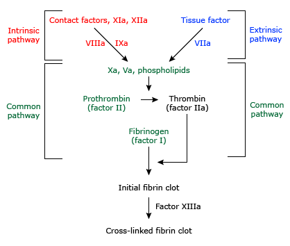

Intrinsic, extrinsic, and common coagulation pathways

Schematic representation of the intrinsic (red), extrinsic (blue), and common (green) coagulation pathways. Contact factors include prekallikrein and HMWK. In the clinical laboratory, the intrinsic (and common) pathway is assessed by the aPTT and the extrinsic (and common) pathway by the PT. The TT assesses the final step in the common pathway, the conversion of fibrinogen to fibrin, following the addition of exogenous thrombin. Fibrin is crosslinked through the action of factor XIII, making the final fibrin clot insoluble in 5 Molar urea or monochloroacetic acid. This latter function is not tested by the PT, aPTT, or TT.